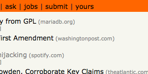

I created this add-on because I wanted to experiment with tweaking the Hacker News browsing experience.
It's meant to be similar to the Reddit Enhancement Suite. A simple set of enhancements to the site.
Get it
You can install the add-on from here. The code is on GitHub.
Use and appreciate Alter HN? Give back on Gittip!
Features
Add a link to your own submissions in the navigation.

Mark submitter comments to distinguish them from others.

Add an [l+c] link to open both the link and the comments page with one click.
...and more!
Support
Need some help? Create an issue in the tracker or send me an email at mail@robert.io.